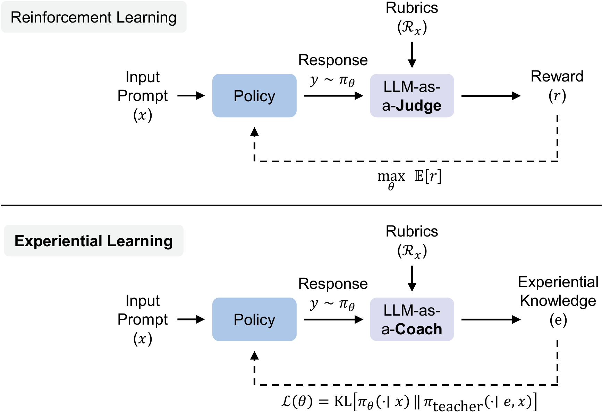
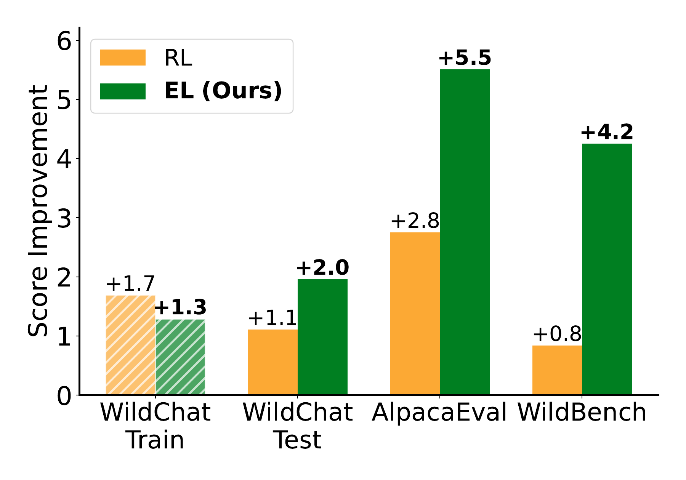

核心判断
Experiential Learning（EL）是一种有说服力的 privileged-context distillation 配方，而不是对强化学习的普遍替代。它保留 LLM 评审产生的文字分析，把分析压缩成“经验”，再让策略模型模仿被这些经验条件化的教师。当前实验支持这种管线有效，却没有直接证明经验真的跨样本可迁移：训练时，经验由当前回答生成，立刻用于指导同一个 prompt、同一条回答前缀；“transferable”首先是 extraction prompt 的要求，跨题复用效果没有单独测量。
真正的创新
把 response-specific 评估先抽象成 transferable knowledge，再用 token-level 分布蒸馏内化；不是简单把 critique 拼到训练样本前面。
最强证据
两类 7B/8B policy、self/GPT-4o 两类反馈模型和四个未见 benchmark 上，EL 的方向性优势相当稳定。
最大缺口
没有跨题 experience-swap、等 teacher-compute 基线、多 seed、人类评测或透明 checkpoint 选择；同一 GPT-4o 还同时参与 rubric、反馈和评分。
它到底在解决什么问题
数学、代码执行和格式约束可以用自动 verifier 给出近似明确的对错；旅行攻略、解释、推荐、创意写作则同时受事实性、相关性、完整性、组织和风格影响。论文的出发点是：评审模型本来已经写出了逐项分析，但 rubric-based RL 最终只取一个 1–10 分整数，于是两个同为 9 分、但错误类型完全不同的回答会收到相同的序列级信号。
这个诊断基本成立。不过需要把范围说准：论文比较的是特定的 1–10 分 GRPO 基线，不是所有 scalar-reward 方法。多维 reward、pairwise preference、generative reward model、process feedback 或经过校准的连续 reward，都可能保留比单个离散分数更多的信息。
开放任务不是“没有标准”，而是标准由多个相互制约的维度组成。标量化会丢掉“哪里好、哪里坏、下次怎么做”的方向；而原始 critique 又可能把模型带进“评论别人”而不是“完成任务”的分布。EL 试图在二者之间保留可行动、可迁移的中间表示。
机制拆解：一次训练更新发生了什么
- On-policy rollout：当前策略 πθ 对真实用户 prompt (x) 生成回答 (y)，而不是用教师离线生成的答案训练。
- Coach extraction：反馈模型 (M) 同时看到 prompt、回答和 prompt-specific rubrics，先逐项评价，再输出一段 experiential knowledge (e)。提示要求它抽象可复用策略，而不是复述本题修正。
- Context-conditioned teacher：把 (e) 放在原 prompt 前，让冻结教师 πteacher 在同一个学生回答前缀 (y_{<t}) 上给出下一 token 分布。
- On-policy context distillation：在学生自己采样的轨迹上，最小化学生分布到经验条件教师分布的 reverse KL，把文字经验写入参数。
- Inference：部署时不再需要 coach、rubrics 或经验上下文，推理接口与原模型相同。
令经验条件教师在某个前缀上的分布为 q_e，完整 reverse KL 可以写成：
因此学生并不是直接“背诵经验文本”，而是在每个已访问前缀上，提高教师在经验条件下认为合理的 token，压低教师不认可的 token，同时保留一个熵项。真正进入参数的信号是 experience 对 teacher logits 造成的改变量；如果经验只是泛泛而谈、教师不会遵循它，或者它没有改变教师分布，再长的文字也没有训练价值。

逐目标审计：公式里隐藏了三个重要假设
1. 这是持续刷新数据的 semi-gradient，不是公式期望的完整梯度
论文把 y ~ πθ 写进期望，而经验 e = M(x, y, R_x) 又依赖整条采样回答。严格对该期望求导，除了 KL 对当前 logits 的直接梯度，还会出现“策略改变采到什么回答、进而改变什么经验”的 score-function 项。算法描述是先采样、抽取经验，再把轨迹与经验视作固定训练数据，只反传 KL；这与常见 on-policy distillation 做法一致，但更准确的说法是用不断刷新的 on-policy 数据做 semi-gradient 更新，不是精确最小化纸面上的复合期望。
2. Top-256、未归一化的量严格说不再是 KL
实验只取学生概率最高的集合 S_256，并明确不把截断概率重新归一化。实际量更接近：
完整 KL 必定非负，上式却可以为负；其尺度还随学生 top-256 覆盖的概率质量变化。更关键的是，集合由学生决定：教师偏好、但尚未进入学生 top-256 的 token 没有直接的 teacher-ratio 项。这种近似更擅长重排学生已经认为可行的候选，未必擅长引入学生原本忽略的表达模式。论文没有报告 full-vocabulary、不同 k、重新归一化或 teacher-top-k 对照，所以“分布匹配”的效果与这个稀疏近似尚未拆开。
3. 同题后见经验可能是有用的 privileged signal，也可能是泄漏
Coach 先读完整回答 y，再生成经验，随后该经验被用于监督 y 的每个早期前缀。这类似 hindsight learning：晚些位置暴露的错误可以修正早期 token 分布，本身并不违规；但它也让 instance-specific 事实、答案结构或措辞绕过“可迁移抽象”要求。若要证明模型学到的是一般策略，应至少比较：同题经验、同类异题经验、随机配对经验、删除实体后的经验，以及只用前缀生成的因果经验。论文都没有做。
当前结果可以由三种机制共同解释：经验确实携带可迁移原则；经验作为同题后见提示帮助冻结教师改写答案；额外 teacher forward 提供了比 GRPO 更平滑的正则化。主表无法区分这三者。
新贡献、已有组件与命名包装
| 组件 | 是否新 | 准确理解 |
|---|---|---|
| Prompt-specific rubrics | 已有 | 来自 Rubrics as Rewards 等工作；本文继续用 GPT-4o 预生成 7,500 个 WildChat-IF prompt 的细粒度标准。 |
| 文字 critique / verbal feedback | 已有 | Reflexion、TextGrad、GEPA、Critique-GRPO 等已经使用自然语言反馈；单纯保留 critique 不是本文贡献。 |
| On-policy context distillation | 同团队 Part I | 在学生轨迹上，用带 privileged context 的教师分布监督学生；本文复用 OPCD 作为内化引擎。 |
| Experience extraction + OPCD 用于开放任务 | 本文核心组合 | 把 rubric assessment 先抽象为 transferable guidance，再把 guidance 翻译成 token 分布；这是最值得保留的设计。 |
| LLM-as-a-Coach | 界面命名 | 反馈模型仍是同一个 evaluator；角色变化发生在优化器消费什么信号，而不是模型突然获得新的“教练能力”。 |
因此，它的创新更接近反馈接口与训练目标重构：Judge 产生的文字并没有直接拿去 SFT，而是先抽象、再经教师分布解释、最后在学生自己的状态分布上蒸馏。这比“多写一段 critique”更系统，但仍建立在 rubric 质量与教师可解释这些经验的前提上。
主结果：方向稳定，但幅度和归因仍需谨慎
主实验用 Qwen3-8B（non-thinking）与 OLMo-3-7B-Instruct 两类 policy，反馈模型分别取初始冻结 policy 或 GPT-4o。每种组合比较 Base、RL 和 EL；训练使用 7,500 条 WildChat-IF、3 个 epoch、每 prompt 8 个 rollout，若每轮完整遍历，约对应 180,000 条 response-level feedback。两种方法 batch size 256、学习率 1e-6、rollout temperature 1，最大 response 4,096 tokens。
| Policy + Feedback | WildChat | AlpacaEval-v2 | WildBench | ArenaHard-v2 | CreativeWritingV3 |
|---|---|---|---|---|---|
| Qwen3-8B + self：EL − RL | +0.8 | +2.7 | +3.4 | +0.5 | +1.7 |
| Qwen3-8B + GPT-4o：EL − RL | +0.3 | −0.8 | +2.8 | +0.7 | +0.9 |
| OLMo-3-7B + self：EL − RL | +1.1 | +4.9 | +5.4 | +2.9 | 0.0 |
| OLMo-3-7B + GPT-4o：EL − RL | +1.4 | +3.8 | +5.9 | +2.6 | +0.2 |
独立复算得到 20 个比较单元中 18 个 EL 更高、1 个持平、1 个更低。最显著的优势集中在 OLMo 的 AlpacaEval/WildBench；Qwen + GPT-4o 的 WildChat 只高 0.3，AlpacaEval 反而低 0.8。没有误差条时，不能判断这些小差值是否超过 evaluator noise。
“18 胜”还不能当作 20 次独立重复实验：同一训练 run 被五个相关的 LLM-based benchmark 重复测量，GPT-4o 又是共同 evaluator，误差会相关。论文报告的是“top-3 performing checkpoints”平均，却没有说明是先固定一组三个 checkpoint 再评全部 benchmark，还是每项指标分别挑 top-3；后一种做法会把约 9 个候选 checkpoint 中的选择噪声带进每列。更可靠的口径应预先固定 validation selector，再只评一次隐藏 test。

图中只有一个 policy/feedback 组合；训练分高、外部评测低与过拟合一致，但也可能受 checkpoint 选择、生成长度、风格偏好或 evaluator shift 影响。论文没有展示具体 hack 行为、因果干预或独立人工审计，所以更准确的表述是“观察到与训练集 reward overoptimization 一致的模式”。
成本公平性也需进一步拆开。两边的 feedback prompt 都要求逐 rubric 分析，EL 还要求额外生成一段 experience，并执行经验条件 teacher forward；所以“共享 rollout 与 feedback model”不等于 feedback token、FLOPs、显存或 wall-clock 相等。论文称方法特有的更新成本相对 online generation 很小，但没有数字。现阶段只能说 EL 在这套预算下效果更好，不能说单位成本更高效。
消融真正告诉了我们什么
1. 经验抽象比原始 critique 更重要
在 Qwen3-1.7B / Qwen3-4B 设置中，Default EL 的 WildChat/IFEval 为 68.6/68.8；Full Critique 是 67.9/64.6，Rubrics Only 是 68.1/65.6，10 类 Multiple-Choice 指令是 66.3/68.5。这个结果支持的不是“文字越长越好”，而是反馈必须被变换成任务求解分布：完整评分文本会诱导教师继续评论，rubric 只告诉目标却不告诉当前失误，粗分类又丢失细节。
2. 会自我更新的教师容易把偏差滚大
固定教师的 WildChat/IFEval 为 80.0/83.1；逐 epoch 更新教师把 WildChat 推到 80.7，却把 IFEval 压到 74.9。加入 25% Tulu3 通用 prompt 的初始教师蒸馏后，IFEval 回到 79.9，但仍低于 base 的 83.5。这说明 EL 并不天然防遗忘；它只是提供一种更容易加 replay / anchoring 的接口。
3. 教练看到了完整回答，经验不是纯因果局部信号
Coach 在生成经验时读过整个回答 (y)，随后这段经验被用于监督回答的每个前缀位置。训练上这是一种合法的后验教学信号，但它意味着“教师分布”包含对未来失败的总结。经验如果偷带本题答案、事实或措辞，模型学到的可能是 response-conditioned label leakage，而非真正可迁移的策略。论文提示要求抽象化，并展示三个例子，但没有自动测量 instance-specific leakage。
4. “可迁移经验”仍是一个未做干预的中间变量
三段公开经验确实比原始 critique 更像指南，但其中大量内容是“准确、清晰、结构化、遵循要求”一类通用原则。Default EL 胜过 Rubrics Only，说明 response-specific 反馈有用；却不能证明经验已经抽象到合适层级，因为没有测量经验跨 prompt 复用、实体重合率、与 rubric 的语义冗余，或 experience 对 teacher logits 的实际影响。尤其 context ablation 只在 Qwen3-1.7B policy / Qwen3-4B coach 上进行，不能自动外推到主表的 Qwen3-8B 与 OLMo 设置。
“5,000× 带宽”该怎么读
论文按通道字母表计算：1–10 分最多是 \(\log_2 10\approx3.32\) bits；1,024 个 token、词表 150,000 的文本通道上限约为 \(1024\log_2 150000\approx17{,}607\) bits，二者相除约 5,300。算术成立，论文 Figure 1 将其取整为“over 5,000×”。
但这只是表示容量上限，不是有效监督的信息量。自然语言高度冗余；经验示例中有不少“准确、清晰、结构化”之类通用建议；coach 可能判断错误；teacher 也可能无法把建议稳定翻译为 token 分布。作者在脚注明确承认这不是 mutual information，但标题式叙事仍容易让人误以为 17,600 bits 全部进入了梯度。
更严格的验证应固定 teacher compute 与 token budget，逐渐改变经验长度、压缩率和语义质量，测量性能是否随有效经验信息而变化；还应加入随机等长文本、同义改写、错误经验和人工精炼经验作为对照。当前 Multiple-Choice 消融只能说明 10 类指令太粗，不能建立“性能由带宽决定”的 scaling law。
Toy experiment 深审：台阶来自奖励构造，不是标量的数学宿命
论文 Figure 4 先把目标分布 p*(y) 映射成 L 档整数奖励，再用带均匀分布 KL 正则的 REINFORCE 学习；EL proxy 则被直接给予完整的 p*，最小化到目标分布的 reverse KL。这个实验直观，但两边接收到的目标信息从定义上就不相等。
若 RL 优化：
所有落在同一奖励档的 token 必然得到相同概率，Figure 4 的台阶因此是目标函数的解析结果，不是额外发现。反过来，只要标量奖励取 r(y) = β log p*(y) + C，均匀 reference 下同一个 RL 目标就能恢复 p*。所以该 toy experiment 证明的是：把细粒度目标粗暴量化成 5 档会丢信息；它没有证明连续标量、生成式 reward、多维 rubric reward 或所有 RL 都无法表达多峰偏好。论文正文其实承认这不是 scalar reward 的普遍不可能性证明，但结论叙事比实验边界更强。
应同时比较 5 档 reward、连续 p*(y) reward、log p*(y) reward、多维 reward 和带噪分布教师，并统一可用的 p* 信息与优化预算。这样才能区分“量化损失”“目标函数选择”和“分布监督”三件事。
关键证据边界
- 评估器耦合：GPT-4o 生成训练 rubrics，也是部分实验的 coach/judge，还是所有五项主评测的 evaluator。结果可能偏好同一模型家族表达出的风格；论文只称更强 proprietary evaluator 趋势一致，没有披露模型、分数或协议。
- 没有统计不确定性：未报告训练 seed、均值/方差、置信区间或显著性。WildChat test 只有 250 个 prompt、每条采样 4 个回答；小于 1 分的差距很可能处在 judge 波动范围内。
- Checkpoint 选择不透明：训练约 90 个 step、每 10 step 保存一次，却报告“top-3 performing checkpoints”的平均；未说明 top-3 用哪个 split/指标选。若直接按测试 benchmark 选，会造成选择偏差。
- 额外计算未等预算：RL 与 EL 共享 rollout 和反馈调用，但 EL 额外做带经验上下文的 teacher forward 和 top-256 token-level distillation。论文称额外更新成本相对较小，却没有 wall-clock、GPU-hour、token 或 API 成本表。
- 基线覆盖窄：只和 1–10 分 GRPO、原始 critique、rubrics-only、10 类指令比较；没有强 pairwise preference、多维 reward、generative reward、DPO/RLAIF 或同等 teacher-compute 蒸馏基线。
- 输出分布混杂：AlpacaEval、ArenaHard 与 WildBench 都是相对 GPT-4-Turbo reference 的 GPT-4o 偏好判断；论文没有报告回答长度、拒答率、格式或风格变化。更长、更结构化、更多免责声明等表面变化可能同时抬高多个相关 judge 指标。
- 经验注入扩大攻击面：原始 response 被直接嵌进 evaluator 模板，抽出的 experience 又作为高权限上下文喂给 teacher。论文未说明标签转义、prompt-injection 过滤或异常 experience 拒绝策略；若 response 能诱导 coach 输出恶意/伪造经验，EL 会把它从一次评分攻击升级为分布监督。这里是实现风险推断，尚无攻击实验。
- 开放性暂未闭环：论文已公开完整 prompt，但官方仓库在核验时只有 README，承诺 2026-07-23 前开放 code 与 data；因此 top-256 KL、数据过滤、checkpoint 选择与评测脚本尚不能独立复现。
术语与概念边界
独立 Insight：把“奖励设计”升级为“反馈编译器”
这篇论文真正打开的方向，是把反馈系统看成一个编译器，而不是一个打分器：
前端：多源证据
rubrics、用户反馈、自动 verifier、事实检索、安全规则和领域专家意见先保留结构，不急着压成单分。
中间表示：经验
把实例错误抽象成带适用范围、置信度、正反例和失效条件的可迁移规则，而不是无边界的泛泛建议。
后端：分布监督
由 teacher 把经验翻译成 token-level target；必要时与 scalar reward、verifier 和 reference anchoring 联合，而非二选一。
验收：反事实测试
删掉、替换或故意污染某条经验，观察模型在哪些能力桶变化，才能知道它学到的是策略还是评审风格。
这也给出一个比“EL vs RL”更实用的工程判断：可验证部分仍交给 verifier，难以验证的质量维度交给经验蒸馏，二者共享同一证据账本。事实、格式、引用和安全边界不应被模糊语言建议替代；创意、结构、语气和解释深度也不该被压成一个总分。真正可靠的后训练栈会是 hybrid feedback，而不是让 Coach 完全取代 Judge。
在相同 feedback token、teacher FLOPs 和总 wall-clock 下，对比：10 级 reward、多维 reward 向量、pairwise preference、原始 critique、人工压缩经验、自动经验与随机等长上下文；用隐藏的人类评审与异构 judge 报告多 seed 均值。只有这样，才能把“EL 有用”推进到“为什么有用、每一单位成本值多少”。
五个最能改变结论的证伪实验
| 实验 | 若 EL 机制成立，应看到什么 | 若失败，意味着什么 |
|---|---|---|
| Experience swap：同题 / 同类异题 / 随机异题 | 同题最好，同类异题仍有稳定收益，随机异题接近无经验 | 收益主要来自同题后见修正，而非可迁移原则 |
| 实体与答案去除、只保留抽象策略 | 大部分收益保留 | experience 含 instance-specific label leakage |
| 等 teacher-compute 的无经验蒸馏与多维 reward | EL 在相同 FLOPs/token 下仍领先 | 优势来自额外教师正则或弱基线 |
| Full KL / student-top-k / teacher-top-k / 不同 k | 结论对稀疏近似稳健，teacher-only 新 token 也能进入策略 | 增益依赖未解释的 top-256 截断技巧 |
| 隐藏人评 + 异构 judge + 预注册 checkpoint | 方向跨 evaluator、seed 与选择规则保持 | 主结果含 judge-family 或 checkpoint-selection 偏差 |
如果上述实验成立，EL 才能从“有效 recipe”升级为较强的方法论主张。当前最稳妥的工程用法，是把它作为 hybrid feedback stack 的一条支路：经验先经过去实体、适用域标注、冲突检查和 teacher-effect 测量，再与 verifier、reference policy anchoring、连续或多维 reward 联合训练。
证据边界与资料索引
本文两轮核对 arXiv v1 的 21 页正文、图表、附录和 TeX 源，并复算主表差值、rollout 数量、带宽上限与 toy RL 的解析最优解；同时对照 OPCD、OEL 与 Rubrics as Rewards 的目标和实验口径。实验结果、成本判断与 reward-hacking 现象均来自发布方报告，本轮未重新训练模型。对 semi-gradient、未归一化 top-256、同题后见泄漏与 prompt injection 的判断来自公开公式和 prompt 的方法审计，均明确标为分析推断。官方仓库截至 2026-07-22 仍只有 README，代码和数据尚未开放，因此实现级结论需在发布后复查。
- Tanishq Mathew Abraham：LLM-as-a-Coach 发布帖
- LLM-as-a-Coach: Experiential Learning for Non-Verifiable Tasks（arXiv:2607.18110 v1）
- Microsoft LMOps：EL 官方仓库入口
- Part I：On-Policy Context Distillation for Language Models
- Part II：Online Experiential Learning for Language Models
- Rubrics as Rewards: Reinforcement Learning Beyond Verifiable Domains